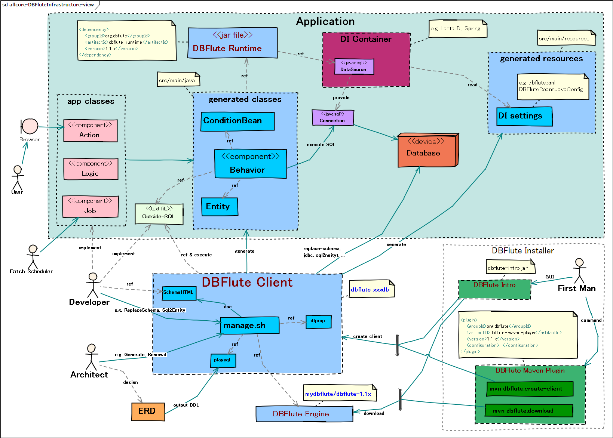

DBFluteの紹介
DBFlute初めての方が真っ先に読むページです。
${indexlist}DBFluteとは？
DB変更に強い をテーマにした開発支援ツール
- リーン・スタートアップ＆インクリメンタル開発
- 設計しながら実装する開発 (納期の短い開発)
ビジネス要求の変化が激しいシステム開発が増えてきました。DB変更は日常の風景。そんな現場でDB変更に対しアプリケーションが できるだけスピーディーに 対応できるようにするために、DBFlute は大きく二つの機能を備えています。
- O/Rマッパー
- 自動生成ドリブンでDB変更の影響範囲をスピーディーに検知
- DB管理支援ツール
- DB環境構築自動化や履歴管理など、DB変更の運用上の悩みを解決
両方の機能を利用することで最大の効果を得られますが、開発運用支援ツールの機能だけを利用することも可能であり、様々なアーキテクチャと組み合わせて利用することもできます。
予期せぬコストはデバッグ作業から生まれる
DB変更の対応作業のコスト(工数)は、見積もりしづらくマネジメント的にはやっかいなものです。 また、DB変更前はとても綺麗に作られていたプログラムが、何度も変化を受け入れていくことで様々なギャップを生み出します。
DB変更への耐性が弱いと、予期せぬコストをもろに食らうことになるのです。
ざっくり全体的な開発ポリシー
- DB変更のしやすさを強く意識
- SQLをフレームワークで徹底管理して変更に敏感に
- ドキュメント自動生成など実装以外のサポート充実
- RDBをRDBとして扱うことを意識
- RDBを隠蔽しない、高機能になり過ぎない
- ただ、SQLの手続きはできるだけ間違いのないように
- デバッグコストを減らすことを意識
- タイプセーフへのこだわり
- ログや例外メッセージの充実
- 現場フィットレイヤの機能を充実
※いわゆる "カッコよさ" にはこだわらないので、そういうフレームワークを求めている方には不向きです。
O/RマッパーとしてのDBFlute
Java と C# (.NET) において利用できます。
自動生成ドリブンでDB変更に強い
データベースのメタデータ(テーブル構造やFK制約など)からEntityなどのDBアクセスするためのクラスが自動生成され、それにより タイプセーフな実装 が可能となり、開発途中や運用後のDB変更の影響範囲の多くをコンパイル時に検知できるようになります。
バランス重視のDBアクセスI/F
DB変更の多いシステム開発では、全てのDBアクセスをSQLで書くというのは予測できないコストを膨張させる要因となります。 かといって、全てをタイプセーフに書けるのか？というとそれは不可能です。 どちらか一方というのではなく、その適材適所のバランスを重視しています。それがDB変更に強く現場フィットするやり方であると考えます。
- よくあるSQL
- ConditionBean *タイプセーフ＆目的ドリブン
- ちょいムズSQL
- 外だしSQL(OutsideSql) *2Way-SQL
全体最適のための現場フィット機能
開発現場とO/Rマッパーの間には必ず隙間が存在します。大抵はその隙間を埋めるのは各ディベロッパーで、開発規模が大きければ大きいほどその無駄な作業がどんどん横展開されていくものです。
DBFluteでは現場フィットな機能を使って開発を全体最適し、それら各ディベロッパーの無駄な負荷を軽減します。他のO/Rマッパーよりはアーキテクトの仕事量とスキルが求められるかもしれませんが、その分を各ディベロッパーに 業務仕様の把握と実現そしてテストに集中 してもらうことで、システム全体の品質の向上を望むことが可能です。
実行時のパフォーマンス考慮
いくら開発時のパフォーマンスが良くても、実行時(ランタイム)のパフォーマンスが良くなければ、それは採用できないO/Rマッパーです。 O/Rマッパーは、DBアクセス実装の道具というだけでなく、アプリケーションの一部品として組み込まれるものだからです。
DBFluteでは、実行時のパフォーマンスに関しても細心の注意を払い、よく言われる "O/Rマッパーはパフォーマンスが心配" と言われる懸念を払拭します。
DB管理支援ツールとしてのDBFlute
どのプログラム言語とでも合わせて利用できます。
DB変更をスムーズに
プログラムだけがDB変更に強くても意味がありません。
よくある "DB変更が発生すると開発運用で困ること" に対する様々な機能を備えます。
- ローカルDB環境への横展開
- ReplaceSchema でバッチ一発ローカルDBを最新状態に
- テストデータの修正が大変
- ReplaceSchema でテストデータの一元管理
- 不整合なテストデータが増えてくる
- TakeFinally でテストデータの整合性チェック
- テーブル定義書がだんだん古くなる
- テーブル定義ドキュメント (SchemaHTML) の自動生成
- DB変更内容が通知されない
- DB変更履歴 (HistoryHTML) の自動生成
- 広がるローカル環境と本番環境のズレ
- AlterCheck と SchemaSyncCheck で妥当性のチェック
Alto DBFluteスタイル
これら、アプリの外側で開発の ベース を支える機能を Alto DBFlute という名前で提案しています。
jfluteのコラムに注目
ドキュメントではわりとフォーマルな表現が求められますが、その問題背景や細かいニュアンスなどを伝えるために、時々ドキュメントに作者である jflute が語る "jflute's Column" というのを載せています。(ちなみに、時々ある緑色の補足的なコメントも jflute のニュアンス表現です)
現場指向のテーマフレームワーク
ある時、Apache Torqueを使ったプロジェクトに参加しました。テーブルのメタ情報からクラスを自動生成する DB変更に強いという仕組み に感動しました。一方で、複雑なSQLを発行したいときに困窮しました。その後、S2Daoを知り、2Way-SQL の素晴らしさに感動しました。一方で、DB変更があった場合に対処するのが大変そうだという感想を抱きました。 その時、この二つの特徴を組み合わせれば 現場にフィット するのではないかと思い、DBFluteの歴史が始まりました。
DBFluteは公開前の半年、公開後の8年半のおよそ丸9年(2006年から2015年にかけて)、 実際の開発現場で利用されつつ作者自身もその現場に入り、利用者の声をダイレクトに受け止め現場への対応を積み重ねてきました。 それゆえ、DBFluteはフレームワークの要件定義を現場から行っています。どういった機能が求められててどういった仕様が良いのか、 トップダウンではなくボトムアップで設計されており、現場にフィットするための多くの機能を備えます。 (DBFluteの成長を支えて下さったプロジェクトの方々には、心から感謝します)
DBFluteは、現場指向 をテーマに開発しています。
DB変更がない現場だと？
それでは、DB変更が全くない現場だと役に立たないのか？
実際には、そういう現場でも活躍します。スピードと品質が求められることには変わりはないからです。 タイプセーフで目的指向な ConditionBean によるスピーディーな実装、ケアレスミスを防ぐ安全性。 安全はスピード と言えるでしょう。DB変更への耐性を付けるために用意された安全性を重視した機能インターフェースが、開発スピードと高品質の実装を生み出すのです。
ただ、DBFluteでなければならない理由はそれほど大きくはなく、他にも選択肢があると考えます。
DBFluteの世界へようこそ
あらためて、DBFluteの世界へようこそ！
概念的な説明だけでは、理解が漠然としているでしょう。ぜひとも具体的な機能を見ながらDBFluteを知って頂けたらと思います。 チュートリアルを用意しております。これらのページを入り口にDBFluteの理解をぜひ深めていって下さい。
では、いってらっしゃいませ！
図 : DBFluteのインフラマップ 
{kind=link}
Thanks, Frameworks!
DBFluteの開発に欠かせなかったフレームワークです。
DBFluteは、Torque の自動生成の仕組みをベースに作られています。また、2Way-SQL の実現には S2Dao のロジックを参考にさせてもらっています。
これらのフレームワークがなければ、今の DBFlute は存在していないでしょう。
Thanks, Friends!
DBFluteを利用していることを公表して頂いているライブラリやサービスです。
- Fess
- is very powerful and easily deployable Enterprise Search Server.
- S2Robot
- is a crawler library for crawling a web site and a file system.
and other many business projects, comming soon...
DBFluteの実績サイト
DBFluteは既に多くの現場で利用されています。ただ、そこはオープンソースプロダクトのつらいところで、jflute自身が関わった現場でゆうに 20 は超え、見聞きしたものを含めれば 30, 40 を超える実績を知りながらも、それは公表はできません。jfluteの耳に入ってくるものは一部、本当はもっとあるでしょうが...。
その中で、幾つかのサイトが DBFlute を使っていることを公表してもOKしてくれています。それを紹介したブログ記事がありますので、ぜひご覧になってください。